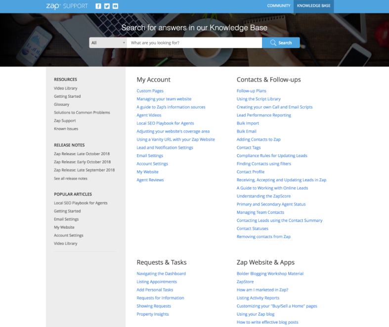
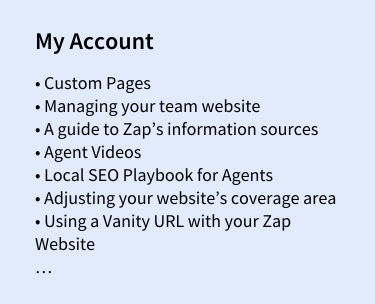
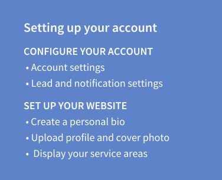
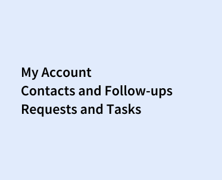
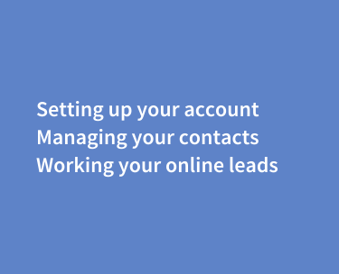
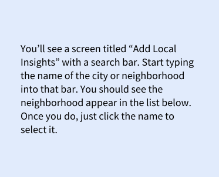
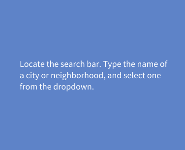
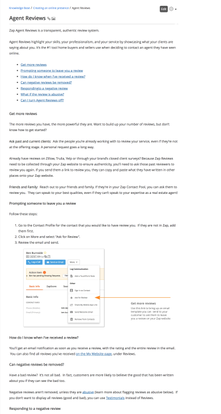
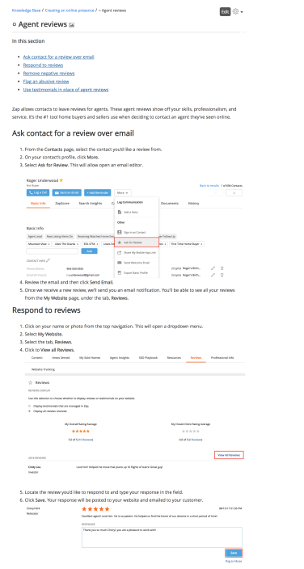

Help Center Audit
The Zap Help Center is a database of tutorial articles, helping agents to navigate the Zap CRM.

Content is outdated and achitecture is whack. As an intern for ZapLabs, I was tasked with going through the articles from our Help Center and identifying outdated articles. The hope was that I could simultaneously learn about our company’s product and help the marketing team with clean-up. But I quickly realized, the Help Center would need more than a little clean up. It was difficult to navigate, outdated, and overwhelming.
EARLY HELP CENTER, PRIOR TO REDESIGN
After I transitioned into a full time position, the team endeavored to redesign the Help Center. I conducted an audit of the 76 articles that made up our Help Center and documented the following fields: Article name, Category, Page views in 2018, and Date last updated.
With this content audit, I wanted to achieve two main objectives:
Taking the content audit, I combed through each article and began grouping them together according to our company’s user journey map. Then, I made a few tweaks to help make the information easier to access.
LONG LISTS > SCANNABLE LISTS Lacking any hierarchy, the Knowledge Base was difficult to navigate. I broke up the articles into smaller subsections.
 BEFORE: LONG LISTS
AFTER: SCANNABLE LISTS
FEATURE-FOCUSE HEADINGS > SCANNABLE HEADINGS The original headings consisted of nouns and feature names. This could be confusing for agents who weren’t familiar with how we titled our features. I developed headings that could be paired to an agent action.
 BEFORE: FEATURE-FOCUSED HEADINGS
AFTER: ACTIONABLE HEADINGS
INCONSISTENT GROUPINGS > INTUITIVE GROUPINGS Some closely-related articles were grouped into separate categories. For example, “Local Insights” and “Property Insights” were categorized under Requests and Tasks and Zap Website and Apps, respectively. For the redesign, I made sure to group like features together.
I interviewed stakeholders, including the Customer Support team, to discover areas for improvement. Our main takeaways from these conversations was that these tutorial articles were too long and too wordy.
LONG ARTICLES > SHORTER ARTICLES The Knowledge Base articles were wordy and hard to scan. We cut down needless copy.
 BEFORE: LONG ARTICLES
AFTER: SHORTER ARTICLES
WALLS OF TEXT > VIDEOS AND IMAGES Agents were frustrated by having to read, so we added more pictures.
 BEFORE: WALLS OF TEXT
AFTER: VIDEOS AND IMAGES
Less is more. Agents don’t want to read. Don’t make them.
Engage other disciplines. The support team spends most of their days engaging with agents and helping to resolve their issues. They had a good grasp of where our help content was lacking.
Conduct a card sort. Next time, I would like to conduct a card sort with our agents. That way, we could rest assured that the categories we proposed made sense to our end user.
Thanks for stopping by. Want to chat? I’d love to grab a drink and talk writing or design. Reach me on LinkedIn or send me a message.